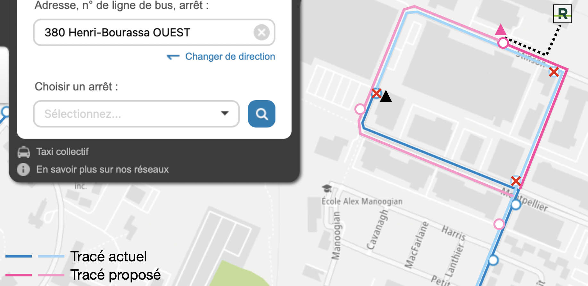

Je propose une modification à la ligne 380 pour uniformiser le parcours des lignes jour/nuit dans le secteur, en plus d’offrir un rabattement aux premiers départs du REM.
Les lignes 124 et 128 (et 202 lors de la refonte) verront leur boucle inversée : ces trois lignes empruntent Hodge et terminent sur Stinson devant le REM. Cependant, la ligne 380 n’a pas été modifiée, avec la justification qu’il n’y a pas de rabattement vers le REM. Cependant, ceci n’est pas vrai ; les premiers et derniers départs sur la ligne 380 permettent bel et bien des correspondances depuis les derniers et premiers départs du REM :
Voici l’horaire actuel du REM et de la ligne 380 :
| Arrivée dernier REM (dir. Côte-de-Liesse) | Départs bus | |||
|---|---|---|---|---|
| Semaine | 25:22 | 380-E | 25:17 • 26:01 | |
| Samedi | 25:52 | 380-E | 25:53 | |
| Dimanche | 25:22 | 380-E | 25:04 • 25:49 | |
| Départ premier REM | vers A1 | vers A4 | Arrivée bus (de la nuit précédente) | |
| Lundi | 05:55 | 06:00 | 380-O | 05:42 • 05:48 |
| Mardi à vendredi | 05:55 | 06:00 | 380-O | 05:44 • 05:58 |
| Samedi | 05:55 | 06:00 | 380-O | 05:44 • 05:58 |
| Dimanche | 05:55 | 06:00 | 380-O | Aucun |
Considérant le fort achalandage des derniers départs en direction ouest, l’ajout d’une correspondance vers le REM serait fort intéressant. Il est donc proposé de modifier le trajet pour concorder au nouveau tracé de la ligne 128 Saint-Laurent, comme suit :
